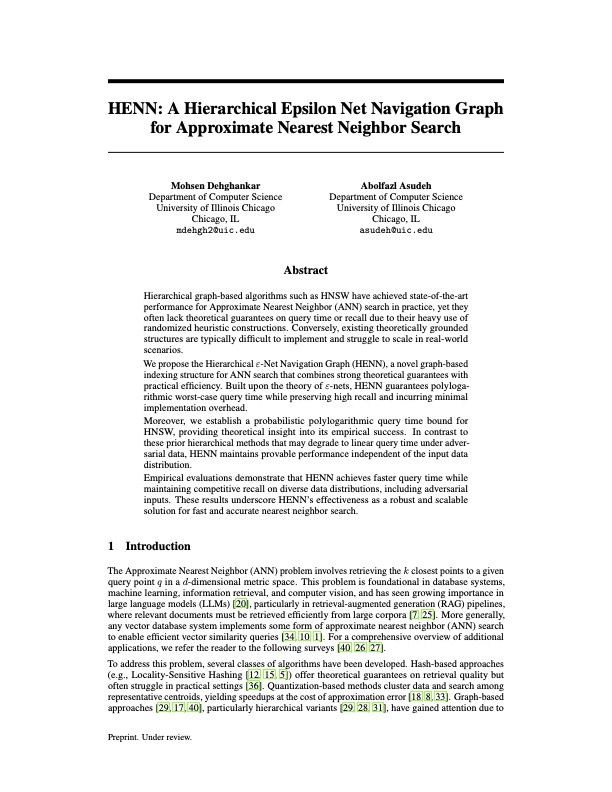

HENN: A Hierarchical Epsilon Net Navigation Graph for Approximate Nearest Neighbor Search

Hierarchical graph-based algorithms such as HNSW have become the dominant practical approach for Approximate Nearest Neighbor search, yet their success has long outpaced their theory. They achieve strong empirical performance, but their reliance on randomized heuristic graph construction leaves open critical questions about query-time guarantees and worst-case recall. At the same time, many theoretically grounded ANN structures remain difficult to implement and rarely match the scale or simplicity demanded by real systems.
This paper introduces HENN, the Hierarchical Epsilon Net Navigation Graph, as a graph-based indexing structure that combines rigorous guarantees with practical efficiency. Built on the theory of ε-nets, HENN guarantees polylogarithmic worst-case query time while preserving high recall and keeping implementation overhead low enough to remain realistic for deployment.
Beyond proposing a new structure, the paper also gives theoretical insight into the empirical success of HNSW by establishing a probabilistic polylogarithmic query-time bound for it. That comparison is important, because prior hierarchical methods may degrade to linear query time under adversarial inputs, whereas HENN maintains provable performance independent of the underlying data distribution.
Extensive experiments show that HENN achieves faster query time while maintaining competitive recall across a range of data distributions, including adversarial settings. The overall result is a robust and scalable ANN solution that closes part of the longstanding gap between principled retrieval theory and high-performance vector search in practice.
Citation: Dehghankar, Mohsen, and Abolfazl Asudeh. 2025. HENN: A Hierarchical Epsilon Net Navigation Graph for Approximate Nearest Neighbor Search. Preprint, CoRR abs/2505.17368.